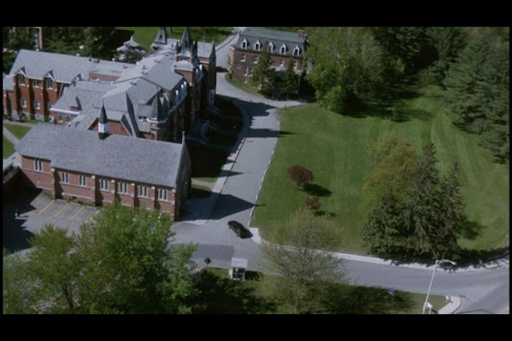
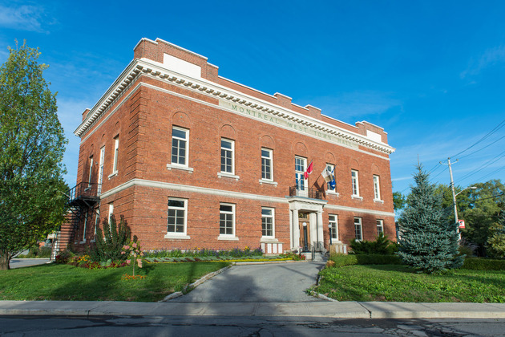

"Lost and Delirious" is a 2001 drama film directed by Lea Pool, based on the novel "The Wives of Bath" by Susan Swan. The story revolves around three teenage girls attending an elite boarding school and explores themes of love, identity, and the pressures of conformity.
The film centers on the close friendship between three roommates: Paulie (played by Piper Perabo), Tory (played by Jessica Pare), and Mouse (played by Mischa Barton). The friendship between Paulie and Tory evolves into a romantic relationship, which becomes the central focus of the narrative. The film delves into their emotional and psychological struggles as they navigate their feelings for each other while dealing with societal expectations and personal challenges.
Lea Pool's direction brings a sense of intimacy and intensity to the film, effectively portraying the intensity of the girls' emotions and conflicts. The cinematography enhances the mood of the story, using visual elements to emphasize the emotional turmoil and the beauty of the Canadian countryside where the film is set.
"Lost and Delirious" explores themes of love, identity, and the struggle for self-acceptance amidst societal pressures. It portrays the challenges faced by LGBTQ+ individuals in coming to terms with their identities and the consequences of societal norms and expectations. The film's exploration of intense emotions and relationships resonates with viewers, provoking thought and discussion about issues of identity and personal authenticity.
"Lost and Delirious" is a 2001 Canadian drama film directed by Lea Pool. The movie was primarily filmed in and around Montreal, Quebec, Canada. Here are some specific shooting locations used in the film:
McGill University: Several scenes were shot on the campus of McGill University, including indoor scenes in the university's buildings.
Montreal West: Some outdoor scenes, including the landscapes and the exterior of the boarding school, were filmed in the Montreal West area.
Overall, "Lost and Delirious" is a poignant and emotionally resonant film that explores themes of love, identity, and the complexities of human relationships. It's a film that invites viewers to reflect on societal norms and the challenges faced by individuals in embracing their true selves. With strong performances and sensitive direction, "Lost and Delirious" remains a notable entry in LGBTQ+ cinema, offering a compelling portrayal of love and longing amidst the pressures of adolescence.